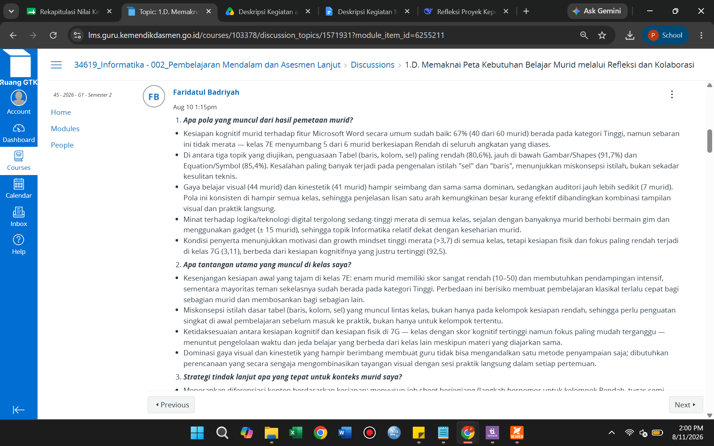
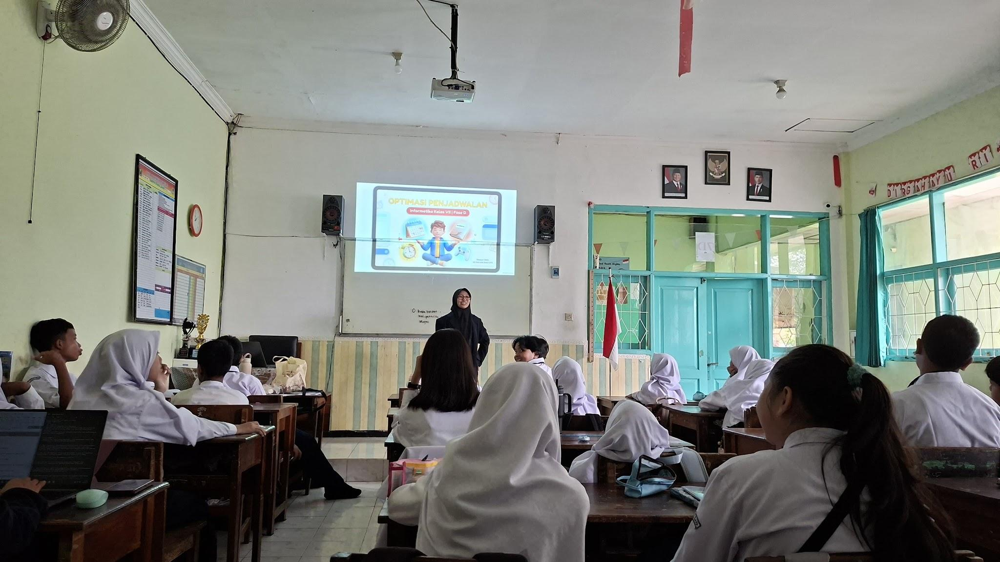
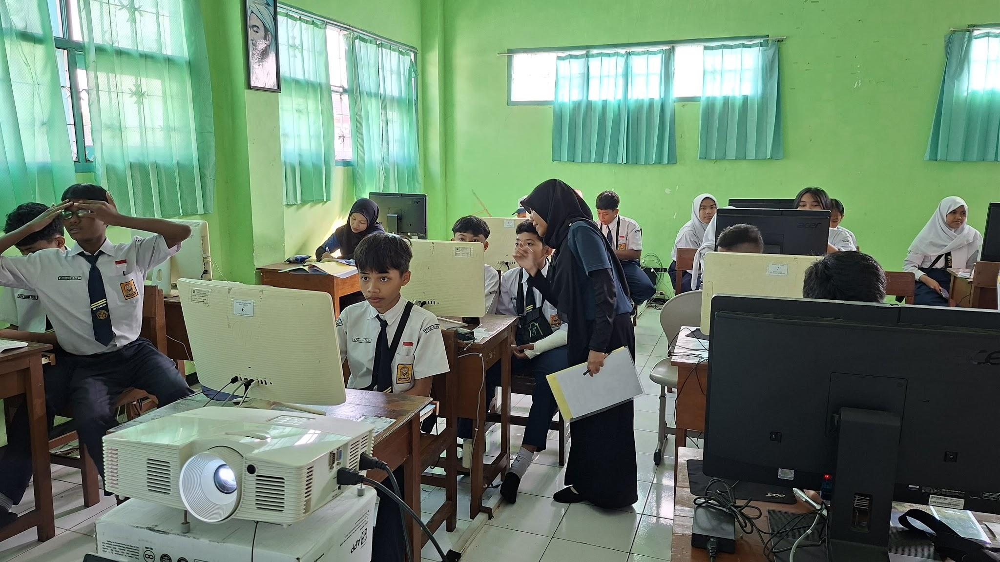
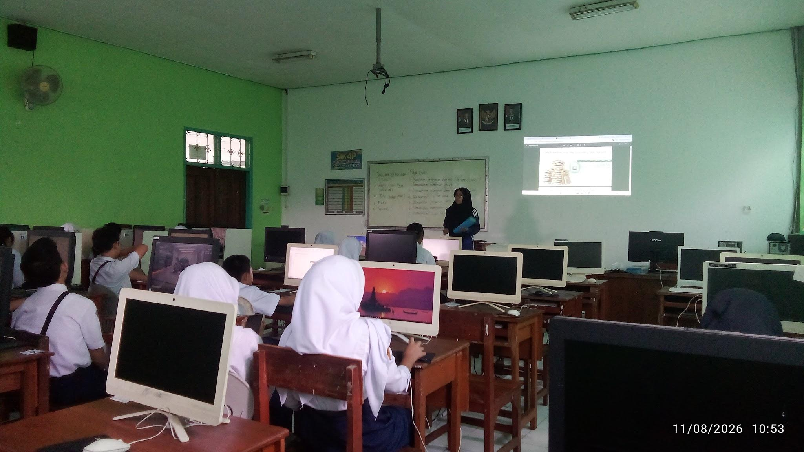
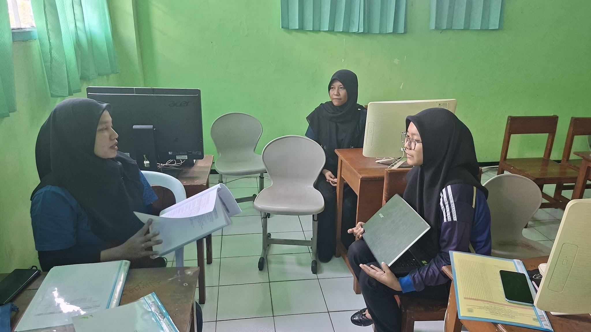
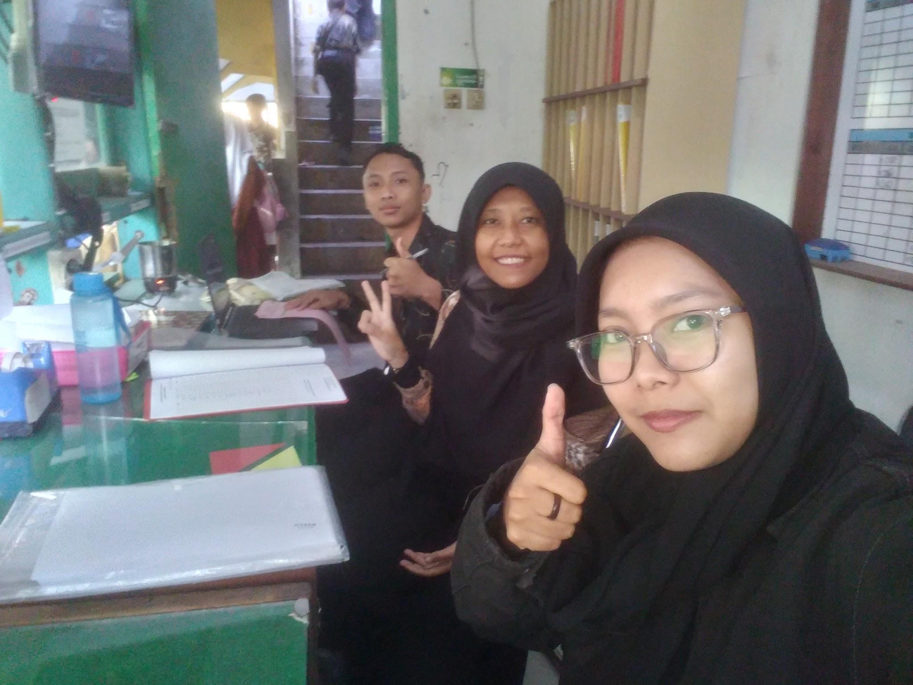
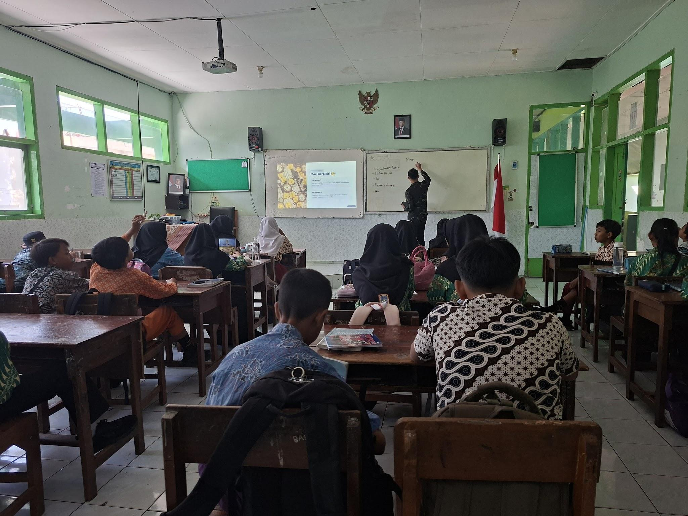
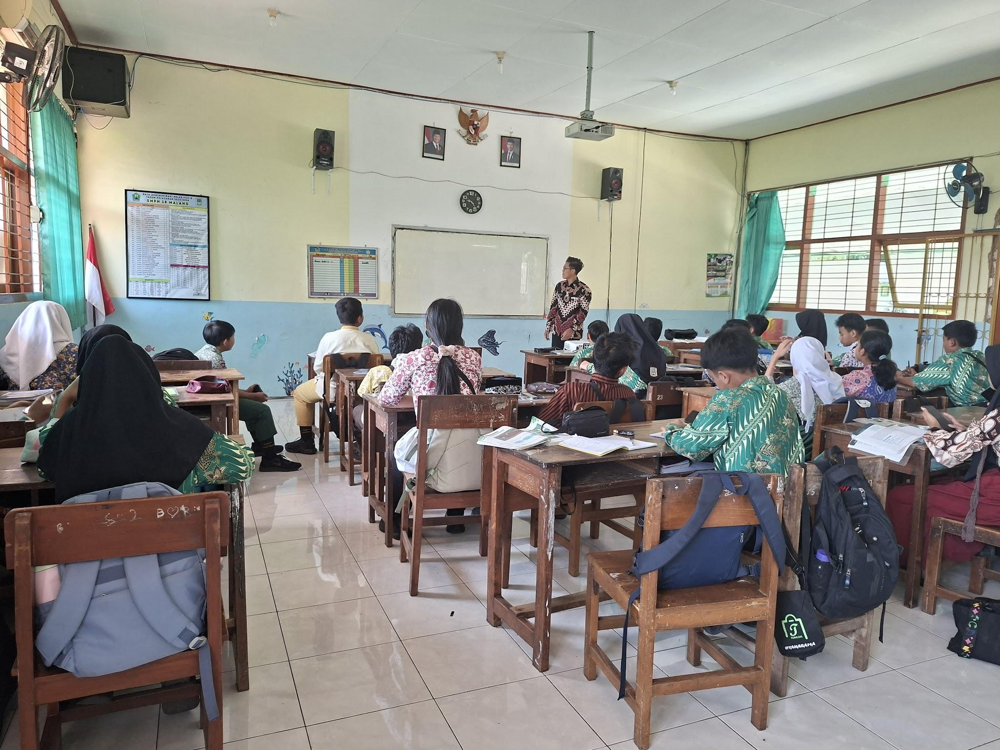
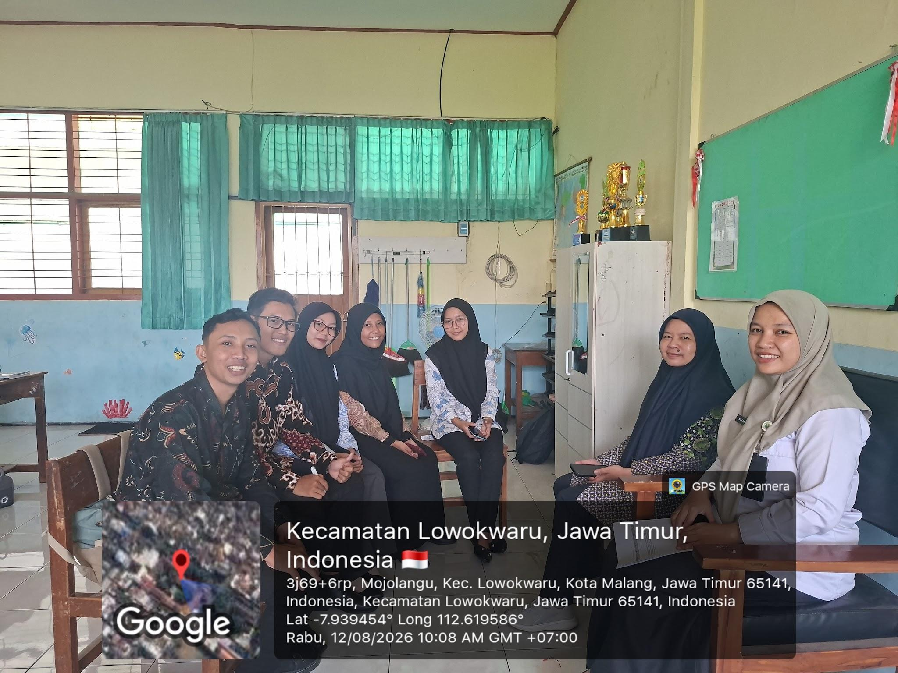

Deskripsi Kegiatan Mingguan
PPL PPG Calon Guru Pendidikan Teknik Informatika Gelombang 1 Tahun 2026
SMPN 18 Malang
Minggu 4
Nama : Siska Yulia Rahmawati
NIM: 253153743918
Hari/Tanggal |
Deskripsi Kegiatan |
Refleksi |
Senin/10 Agustus 2026 |
Mengerjakan LMS mata kuliah seminar PPG Membuat LKPD Observasi Lesson Study di kelas 7D |
Mengerjakan LMS seminar PPG, membuat LKPD, dan observasi lesson study di kelas 7D mengajarkan saya pentingnya perencanaan pembelajaran yang sistematis dan kolaboratif. Pengalaman ini memotivasi saya untuk menjadi pendidik yang profesional dan inovatif. |
Selasa/11 Agustus 2026 |
Observasi Lesson study di kelas 8I esson study di kelas 8H Evaluasi proses pembelajaran selama LS di kelas 8I dan kelas 8H |
Mengikuti lesson study di kelas 8I dan 8H mengajarkan saya arti keteladanan dan kolaborasi. Saya belajar bahwa sedangkan lesson study meningkatkan kualitas pengajaran. Pengalaman ini memotivasi saya menjadi guru yang lebih baik. |
Rabu/12 Agustus 2026 |
Standby di ruang piket Observasi kelas 7F Observasi kelas 7A Kunjungan DPL (Dosen Pembimbing Lapangan) |
Standby di ruang piket, observasi kelas 7F dan 7A, serta kunjungan DPL mengajarkan saya tentang kedisiplinan, tanggung jawab, dan pentingnya bimbingan dalam proses pembelajaran. Saya belajar mengamati karakter murid yang berbeda serta menerima arahan dari dosen pembimbing untuk memperbaiki diri. Pengalaman ini memperkuat komitmen saya sebagai calon pendidik. |
Malang, 12 Agustus 2026 |
|
Guru Pamong
Ratna Agustyasari, S.Pd. NIP. 19890802 2019022001 |
Mahasiswa PPG Calon Guru Gelombang 1
Siska Yulia Rahmawati NIM 253153743918 |
Kepala Sekolah SMP Negeri 18 Malang
Mohammad Amrozi Hamidi, S.Pd., M.M NIP. 19681102 199203 1005 |
Lampiran
Tanggal |
Dokumentasi |
|
10 Agustus 2026 |
 Mengerjakan LMS |
 Observasi Lesson Study di Kelas 7D |
11 Agustus 2026 |
 Observasi Lesson study di kelas 8I |
|
 Lesson study kelas 8H |
 Evaluasi Proses Pembelajaran |
|
12 Agustus 2026 |
 Standby di ruang piket |
 Observasi kelas 7F |
 Observasi kelas 7A |
 Kunjungan DPL |